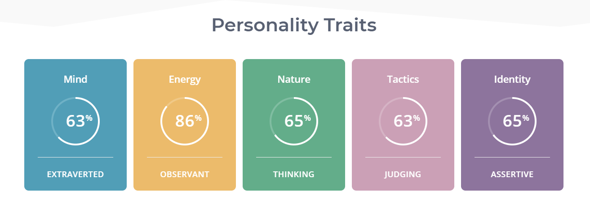
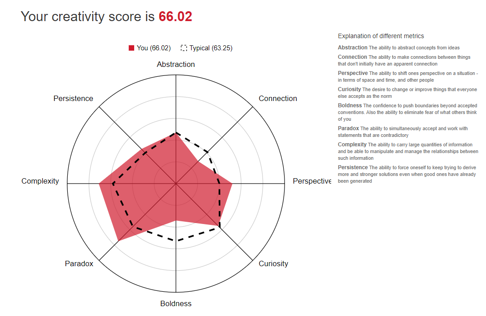

Interest in IT
My interest in Information Technology began in 1993 when I got my first personal computer. The internet was still in its infancy, the entire concept was all new and exciting. I was really enjoying my computer studies subject at high school. I was very tempted to persue my studies further, however my desire to join the Australian Army was stronger. Eight years later, I was injured and as a result, medically discharge from the Army. I was lucky enough to be the successful applicant for an Australian Public Service position in a IT Operations Centre. The technologies were quite varied, UNIX, Networking, Windows, communications systems, the list goes on. From that point onwards I have bounced around the IT sector a little bit, working for various Private Sector companies,Fujitsu, Cisco,UXC Consulting and most recently DXC as a IT Project Manager.
Several months ago, I found myself in a position where I "was going through the motions". I enjoyed my job, but I was no challenged by the role. The IT sector is wide and varied, so I thought I what better way to expand my horizons.
Information Technology is ever changing, there is always something new to learn, and something new to discover. I have never had any exposure to programming, so I have also feared delving further into that subject. I am hoping that my further studies will build my confidence in an ever changing field.
https://www.seek.com.au/job/40484638?type=standard#searchRequestToken=b8a312de-ca96-4fa4-b857-47603dd2dd3b
Managing a team of desktop engineers and delivery various platforms. This position is a great mix of "handson" desktop support works, coupled with managing personnel, and lastly liaising with customers. I am a people person, I love engaging with people and I also love solving IT problems.
This position will involve many years of experience as the desktop support role is a varied part of IT. It can involve replacing monitors, configuring switches, troublshooting Active Directory and the list goes on. Thei role is seeking Windows SOE Developers, Packaging applications, System Configuration Console. It isn't after a degree, just a lot of experience and exposure.
My existing skills and experience fulful most of this role. I have not have any experience in packaging applications or building a Windows Operating System build. However I have had 4 years experience with SCCM, and my strong analytical skills will assist me in breaking down the many problems in order to assist the business.
I am hoping that my further studies will give me a greater understand on how applications are packaged. Even I do not go through the motions of packaging and deploying the appplications. I am definatley a how and why type of person, so once I have analysed how this is done, I will be comfortable putting the concept into practise.
https://www.16personalities.com/profiles/235fdf0501218
EducationPlanner.orgPrint Window What's Your Learning Style? The Results Scott Smith's scores: • Auditory: 30% • Visual: 55% • Tactile: 15%
You are a Visual learner! Check out the information below, or view all of the learning styles. Visual If you are a visual learner, you learn by reading or seeing pictures. You understand and remember things by sight. You can picture what you are learning in your head, and you learn best by using methods that are primarily visual. You like to see what you are learning.
As a visual learner, you are usually neat and clean. You often close your eyes to visualize or remember something, and you will find something to watch if you become bored. You may have difficulty with spoken directions and may be easily distracted by sounds. You are attracted to color and to spoken language (like stories) that is rich in imagery.
http://www.testmycreativity.com/share/1E573be6d26c

I am not surprised by any of my results. I do know that I am extroverted, and that comes in handy if you need to get your point across. I need to be careful in a team environment as I do not want to intimidate other members of the team.
I have often found myself trying to squeeze my car into my not so big garage. I am not fortunate enough to have a large quadruple man shed or barn that can house my car and 5 tractors. I own a Nissan Navara, it is a large car, but there are certainly larger vehicles on the market. The number problem I have encountered is, getting my car far enough into the garage without hitting the wall but ensuring that the garage door does not hit my tow ball. My project idea will be a motion censor that activates an indicator light when an object is within a certain range.
The reason that I feel that there is need for such a censor is because far too many Gyproc walls have fallen victim to the front end of a car or bull bar. There have also been many garage door motors burn out due to the fact that the tow ball of a car is stronger than an electric motor. I plan on designing this system utilising the Arduino open source electronic platform. The Arduino platform is perfect solution for the problem I am experiencing in my garage. The starting price for an Arduino Uno board is under $20. Considering the hourly rate of a Gyproc plasterer, I consider this very good option.
Arduino is an open source electronics platform that features easy to use hardware and software. Arduino electronic boards that are similar to computer motherboard, only smaller and also very configurable. They are able to read inputs, for example light sensors, receive an input from a button, then they interpret that input and turn into an output, for example, turn a motor on, turning on a LED light.
The board will need to be programmed with certain instructions in order to process the input into an output. Like all computer languages, simple line by line English is not able to be understood by the processor on the Arduino board. Arduino Programming Language is a set of C and C++ functions, once these functions are compiled by the processor. The output occurs.
My project idea begins with the main Arduino board. The Arduino Uno is a very versatile board and is probably overkill for sensor and light. But as I use the sensor, it leaves options open for adding extra modules. Starting with the Arduino Uno, I will be adding a motion sensor. The Arduino will be programmed to sensor movement within a specified range. For my size garage and vehicle, I plan on programming the Arduino unit to sense motion within 200mm. The second module that I will need to attach to the Arduino board is the LED light. As motion is detected within the 200mm range, the Arduino board will process the movement on the sensor as “input” and then light up the LED light as an “output”.
Obviously, the unit need to be powered. My options are to power the module using standard a 10-amp 240 Volt standard house outlet. I can also power the module using a 12volt battery. The problem with the standard batter option is, overtime the battery will eventually go flat. To alleviate this issue of the battery going flat or running out of power. I can replace the standard 12v battery with a rechargeable version. Then install a (approximately 15 metre) cable to the garage roof and then attach a small solar panel in order to charge the battery.
The above Arduino board, sensor, light and solar panel setup will be sufficient for when the front of the vehicle approached the garage wall and is within 200mm of the front of the car, or rear of the car if you have reversed the vehicle.
To expand on the above design, an Infra-Red “Breakbeam” sensor can also be installed to the Arduino board and the cables run to the rear of the garage. As the vehicle has entered the Garage and approached the movement sensor located at the wall light one will illuminate when movement is sensed within 200mm. As the vehicle has passed through the “Breakbeam” sensor located at the garage door the second LED light will illuminate. In order the assemble these various modules, various tools will need to be obtained. A soldering Iron to attach the wiring to the Arduino board to the Sensor, light and battery modules. Quality wire strippers will be needed. As with any project like this, it is important to have good contact with the wire and the solder to avoid connections issues. As the connections points on the Arduino board are quite small, it is also a good idea to have a small magnifying glass. These are quite cheap and available from places like Jaycar.
When running the wire from the Arduino board to the rear sensor and to the solar panel on the roof. It is important that these cables are kept up out of the way. A good option will be to, purchase some adhesive sticky mounts and some zip ties. The mounts can be stuck to the wall, and the cable zip tied to the mount to avoid being tripped over and disconnected from the module. Soldering is not a difficult task, but is can be messy. With plenty of practice, you will be able to control the amount of solder you require on each connection to optimise cleanliness and effective connection. Arduino programming language can be self-taught. Upon researching this assignment task, I found many forums and Facebook groups that can provide advise and guidance. The Arduino software comes many examples that the users will be able to implement.
Upon successful soldering, assembling, cabling, powering and programming of this project idea. It will provide the user with a motion activated indicator light, that will alert the driver of a vehicle that they are far enough in the garage so the garage door will close, but not too far that the vehicle hits the wall and damaged the brickwork or Gyproc wall. It is a cost effective solution, that can be mass produced and installed by most home users.
www.seek.com.au
https://www.16personalities.com
http://www.testmycreativity.com/
www.EducationPlanner.org
https://www.arduino.cc/
https://en.wikipedia.org/wiki/Arduino
https://www.element14.com/community/community/arduino